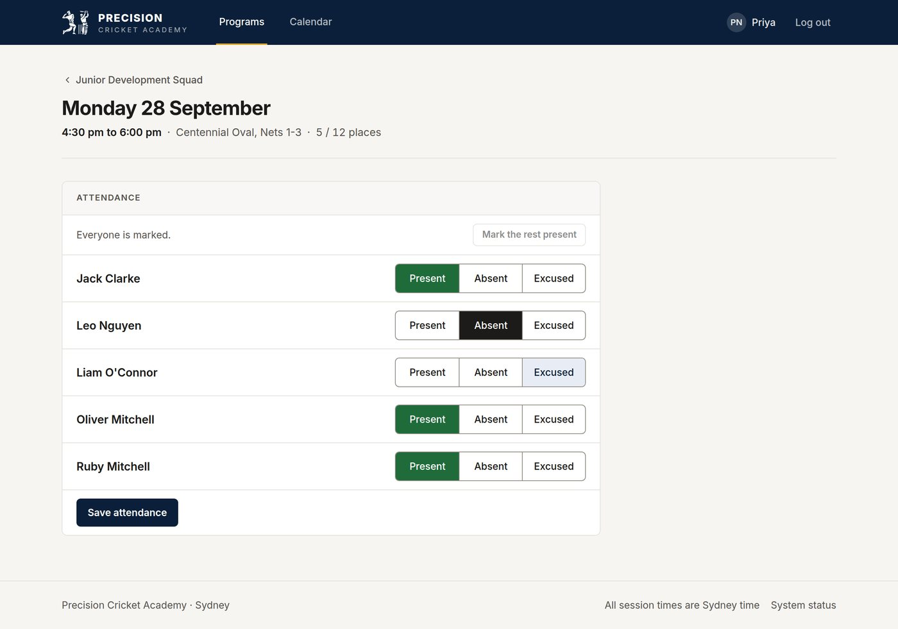
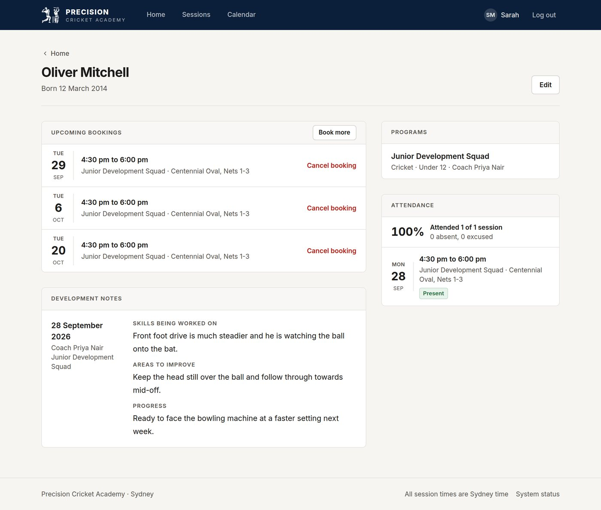

Sports Academy Platform
Bookings, attendance and player notes for Precision Cricket Academy, the cricket academy I co-founded. It replaced a mix of phone calls, messages and spreadsheets.

The problem
The academy grew from 5 to 30+ players across two clubs, with two coaches running 30+ sessions a week. Bookings, availability and attendance lived in calls, group chats and spreadsheets. Parents had no single place to book a session or see how their child was going, and coaches had no reliable record of who actually turned up.
What I built
A web app with two roles. Public sign-up only creates parent accounts; coach accounts are made with a script.
- Coaches create programs, enrol players, schedule sessions with a capacity, take attendance and write development notes.
- Parents add their children, book them into sessions, cancel before a session starts, and see attendance and every note about their child.
- Accounts use Argon2 password hashing, JWT access tokens, refresh tokens in an httpOnly cookie, role checks and login rate limiting.
- Privacy is enforced in the API. A child's date of birth is only visible to their parents and their coaches, and a coach only sees attendance and notes from their own programs.
The tricky parts
Two parents, one place left
If two parents book the last place at the same moment, both requests can read "1 place left" and both succeed. I fixed that in two layers. Every booking or cancellation locks the session's row first, then checks the rules and updates the count in the same transaction, so concurrent requests queue up instead of racing. Behind that, the database itself refuses a booked count above capacity.
session = lock_session(db, session_id) # row lock until commit
if session.booked_count >= session.capacity:
raise ConflictError("This session is full", code="SESSION_FULL")
session.booked_count += 1
# and in the table:
CheckConstraint("booked_count <= capacity", name="not_overbooked")To prove it, an integration test starts 8 threads, holds them at a barrier, then releases them all at once to book a session with 1 or 3 places. It checks that exactly that many get booked and everyone else gets "session full". It can't run inside the usual rolled-back test transaction, because the threads only block each other when the data is actually committed.
Keeping login working on free hosting
The demo runs the frontend on Vercel and the API on Render, which are different domains. Calling Render directly would turn the refresh-token cookie into a third-party cookie, and many browsers drop those. Instead, Vercel forwards every /api request to Render, so the browser only ever talks to one site. The cookie stays SameSite=Strict and CORS stays turned off.
Time zones
Session times are stored in UTC and always shown in Sydney time, whatever time zone a parent's device is set to, so a 4:30 pm session never shows up as 5:30.

Testing
Every change runs the whole suite in GitHub Actions, against a real PostgreSQL database. Runtime and package versions are pinned so it behaves the same locally, in Docker and in CI.
Result
The platform now runs all of the academy's bookings: 30+ players, 30+ sessions a week, two coaches and two clubs. The public demo runs the same code with made-up data, so anyone can log in as a coach or a parent and try it.
Known limits
- The demo is on free tiers, so the first request after 15 quiet minutes waits about a minute while the backend wakes up. A keep-alive ping would fix that but would burn through the database's free compute hours.
- Login limits are kept in memory, so they reset whenever the backend restarts.
- Payments are the next phase and aren't built yet.